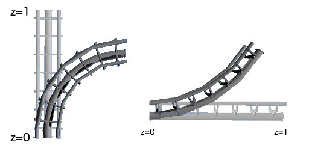

By Thomas Steinke
This program uses in-shader vertex transforms to create any kind of track curvature, from z-twists to simple turns. By scaling the track model to fit within 0 <= z <= 1, we can transform as follows:

In addition, I use Perlin noise (libnoise) to add a realistic camera shake, to make the experience more believable.
To give the coaster a realistic pace, I use kinetic and potential energy calculations, as well as friction to maintain a physically realistic speed as the car progresses.
Lastly, I use hierarchical modeling to make sure that the track transformations are fluid and that the cars sit nicely on the track. To avoid recomputing an entire (possibly 200-deep) matrix stack every frame, the transformations for a track piece are done once and then saved.